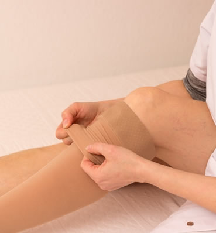
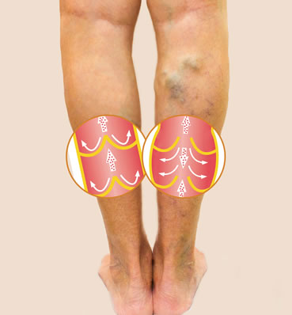
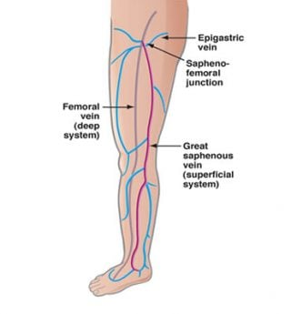
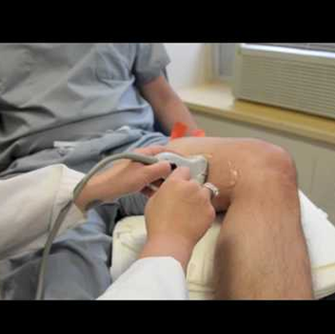
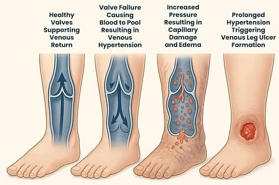

Ambulatory Phlebectomy
Ambulatory phlebectomy is a minimally invasive procedure used for the treatment of bulging varicose veins. This…
Learn more
Chronic Venous Insufficiency Ultrasound
Vein mapping is a non-invasive diagnostic ultrasound procedure used to evaluate the veins in the legs for chronic…
Learn more
Conservative Vein Treatments
While compression stockings do help to ease the symptoms, they will not eliminate spider or varicose veins. In…
Learn more
Radiofrequency Catheter Ablation
Radiofrequency Catheter Ablation is used to treat varicose veins that are enlarged with damaged or diseased…
Learn more
Sclerotherapy
Sclerotherapy is used to treat spider veins and sometimes small varicose veins. The vein is injected with a…
Learn more
Varicose Veins & Leg Swelling
Varicose veins are often source of leg swelling
Learn more
Vein Disease Overview
Approximately 40 million Americans are affected by vein disease, with chronic venous insufficiency and varicose…
Learn more
Vein Mapping
Vein mapping is an ultrasound to evaluate the venous systems for evidence of valvular incompetence.
Learn more
VenaSeal Closure System
Heart Vein & Vascular is pleased to be among the first in Central Florida to offer the new FDA approved ‘Venaseal…
Learn more
Venous Reflux Disease
Your body contains approximately 60,000 miles of veins, which are blood vessels that pump blood back to the heart,…
Learn more